Tema extra - Fundamentos de los sistemas operativos1. ¿Qué es un sistema operativo?Ejemplos de sistemas operativos2. Conocer las terminales🪟 Windows🐧 Linux¿Qué es el prompt?📜 Historial de comandos3. Cuestiones importantes a tener en cuenta en Linux3.1 Mayúsculas y minúsculas3.2 El uso del tabulador3.3 Alias4. Estructura básica de directorios🪟 Windows🐧 Linux🆚 Resumen comparativo5. Rutas absolutas y relativas🧭 Ruta absoluta🧭 Ruta relativa🔁 Niveles en las carpetas🧪 Práctica6. Comandos básicos en Linux🔍 Navegación📁 Gestionar carpetas📄 Gestionar archivos📝 Tabla resumen6.1 Comando ls6.2 Comodines en la terminal7. Comandos básicos en Windows🔍 Navegación📁 Gestionar carpetas📄 Gestionar archivos📝 Tabla resumen8. Fundamentos comunes📁 Archivos y carpetas🔀 Navegación básica🧭 Equivalencias clave9. Espacios de trabajo🪟 Windows🐧 Linux (Mint XFCE)10. Práctica resumen
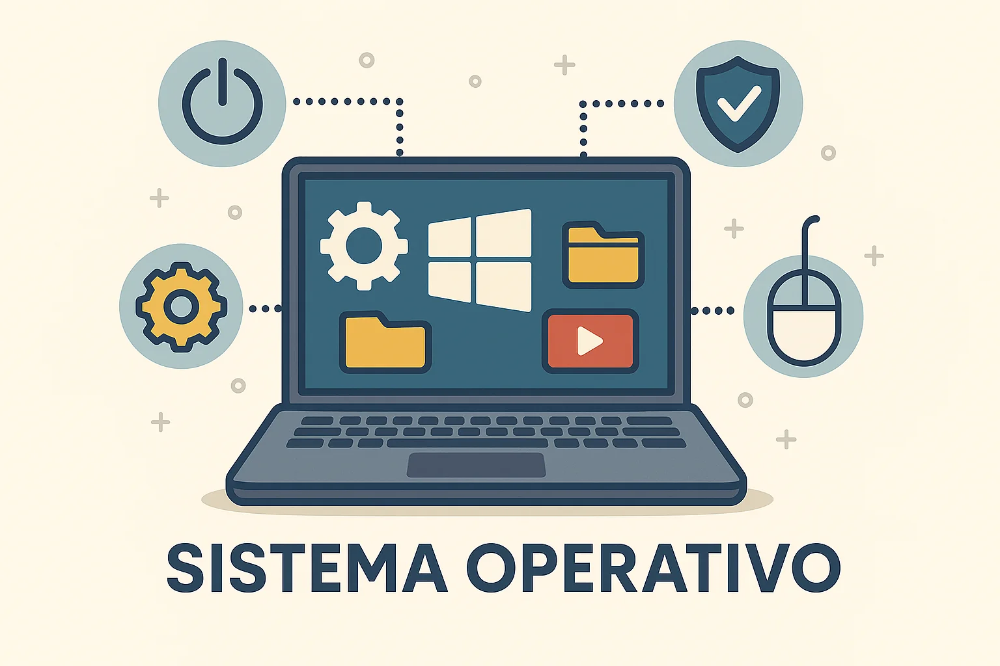
El sistema operativo (SO) es el programa más importante de tu ordenador. Es como el jefe de orquesta que se encarga de que todo funcione: desde que enciendes el equipo hasta que abres tus aplicaciones favoritas.
Sin sistema operativo, el ordenador sería poco más que un trozo de chatarra: no sabría cómo usar la pantalla, el teclado, la red… ¡ni siquiera sabría arrancar!
Tip
Si alguna vez ves un mensaje como “No se ha encontrado un sistema operativo” al encender un equipo, es porque literalmente no tiene con qué funcionar.
Funciones principales de un sistema operativo:
Gestionar el hardware (procesador, memoria, discos, impresoras…).
Coordinar la ejecución de los programas.
Proporcionar una interfaz para que los usuarios interactúen (gráfica o por comandos).
Administrar usuarios y permisos.
Controlar la seguridad del sistema.
Windows: El más común en entornos de oficina. Interfaz gráfica amigable, muy extendido.
Linux: Gratuito, flexible y muy usado en servidores o entornos técnicos.
macOS: Exclusivo de Apple. Visualmente pulido, basado en Unix.
Android: Sistema operativo basado en Linux, muy extendido en móviles y tabletas.
Note
En este curso trabajaremos principalmente con Windows y Linux, usando máquinas virtuales para poder practicar sin miedo.
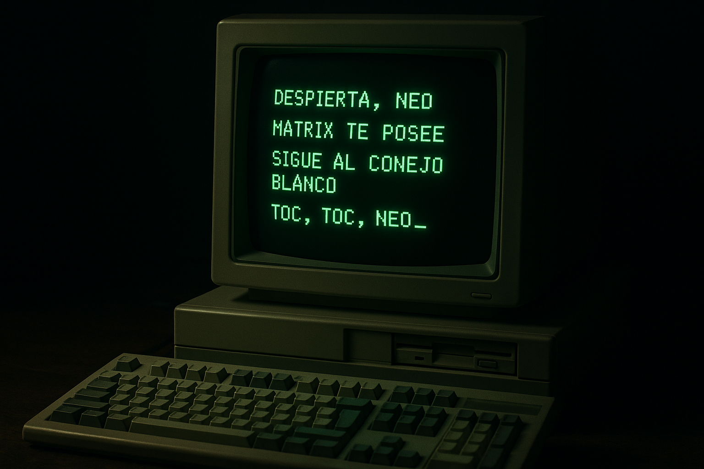
Aunque la mayoría de usuarios usa el sistema operativo desde la interfaz gráfica (ventanas, iconos, menús...), los administradores y técnicos suelen apoyarse mucho en la terminal o línea de comandos para realizar tareas avanzadas o automatizadas.
Vamos a ver cómo acceder a la terminal en Windows y en Linux, y qué aspecto tiene en cada uno.
Windows tiene varias formas de acceder a la consola. Las más habituales son:
Símbolo del sistema (cmd): la terminal clásica de Windows. Muy básica, pero aún útil.
PowerShell: más moderna y potente, permite hacer scripts más complejos.
Terminal de Windows: nueva app que unifica varias consolas en una sola ventana (si está instalada).
Tip
La nueva Terminal de Windows es una aplicación moderna que permite abrir pestañas con distintas consolas dentro de la misma ventana.
Puedes tener al mismo tiempo:
cmd
PowerShell
La consola de Git Bash, si tienes Git instalado
La consola de MySQL, si tienes el servidor instalado
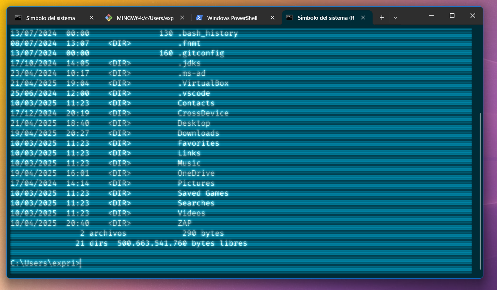
Además, permite personalizar el aspecto, añadir atajos y cambiar entre terminales fácilmente.
Puedes buscarla como "Terminal" desde el menú de inicio o instalarla desde la Microsoft Store si no viene por defecto.
Cómo abrir una terminal:
Pulsa Inicio y escribe cmd o powershell.
O usa Win + R y escribe cmd, luego pulsa Enter.
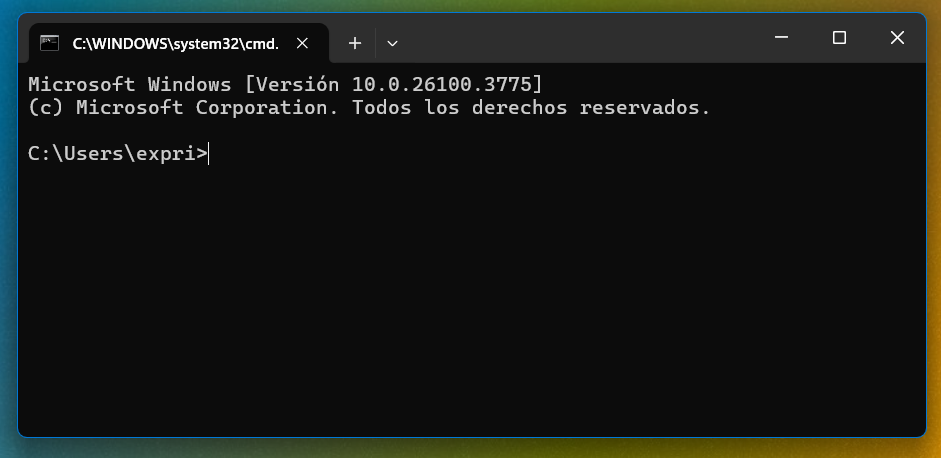
Note
Aunque PowerShell y cmd son distintas, en este curso nos centraremos en los comandos universales que funcionan en ambas.
En entornos de escritorio Linux, la terminal es una herramienta fundamental para la administración del sistema.
Cómo abrir la terminal en XFCE:
Pulsa Ctrl + Alt + T
O abre el menú de inicio y busca "Terminal"
O pulsa el icono de Terminal que tienes en el panel inferior.
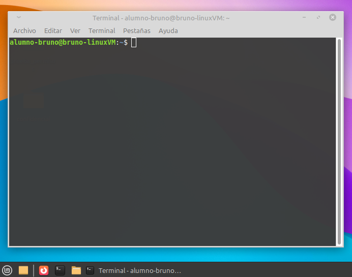
La terminal de Linux puede parecer intimidante al principio, pero verás que muchas acciones son directas y muy potentes.
Tip
En Linux no hace falta hacer clic para casi nada si aprendes a manejar bien la terminal. ¡Incluso puedes automatizar tareas completas con scripts!
El prompt es ese texto que aparece justo antes de que podamos escribir un comando. Sirve para mostrar información útil sobre el sistema y decirnos que la terminal está lista para recibir instrucciones, mostrando un cursor parpadeando.
🪟 En Windows (cmd):
Suele aparecer algo como:
1C:\Users\usuario>Esto indica la ruta actual en la que estamos. Es decir, en qué carpeta estamos trabajando.
Note
Ya veremos las rutas más adelante, pero por ahora piensa que estamos en la carpeta usuario, que está dentro de la carpeta users, que está en la unidad c:.
🐧 En Linux:
Un prompt típico se ve así:
xxxxxxxxxx11usuario@nombre-equipo:~$Aquí vemos:
El nombre del usuario
El nombre del equipo
La carpeta actual (~ significa "tu carpeta personal")
El símbolo $ indica que estamos en modo usuario normal
(si fuera #, estaríamos como root)
Tip
El prompt es configurable. En Linux, por ejemplo, se puede personalizar para mostrar la hora, rama de Git, etc. Pero en este curso usaremos el formato por defecto para no complicarlo.
Todas las terminales (tanto en Linux como en Windows) guardan un historial de los comandos que vas escribiendo. Esto te permite repetir o editar comandos anteriores sin tener que volver a escribirlos desde cero.
Cómo moverse por el historial:
Pulsa la flecha ↑ para ver el comando anterior
Pulsa la flecha ↓ para avanzar en el historial (si ya has ido hacia atrás)
Tip
Esta función es especialmente útil cuando estás haciendo pruebas, repitiendo tareas o corrigiendo errores.
Además, si empiezas a escribir un comando y pulsas la flecha ↑, la terminal buscará el último comando que empieza igual. Así puedes repetir fácilmente, por ejemplo, sudo apt install sin escribirlo todo otra vez.
Una de las primeras cosas que hay que aprender en Linux es que las mayúsculas y minúsculas importan.
En Windows, puedes tener una carpeta llamada Documentos, y si escribes documentos probablemente funcione igual.
Pero en Linux... no.
Warning
En Linux, Documentos, documentos y DOCUMENTOS son tres cosas completamente distintas. Si te equivocas en una sola letra, el sistema no encontrará lo que estás buscando.
Esto aplica a:
Nombres de archivos y carpetas
Comandos
Usuarios
Variables de entorno
Ejemplo:
Si estás en una carpeta con un archivo llamado Informe.txt, escribir cat informe.txt dará error.
Por eso es fundamental prestar atención a cómo están escritos los nombres. Incluso copiar/pegar puede salvarte de errores tontos.
Tip
Si no estás seguro de cómo se llama exactamente un archivo, puedes usar la tecla Tab para que la terminal lo autocomplete (¡lo veremos en el siguiente punto!).
Una de las funciones más útiles de la terminal, y que te puede ahorrar muchos errores y tiempo, es el autocompletado usando la tecla Tab.
Cuando estás escribiendo una ruta, un nombre de archivo o incluso un comando, puedes pulsar Tab para que el sistema lo complete por ti automáticamente.
Ejemplo:
Si estás en una carpeta que contiene un archivo llamado informe-financiero.txt, puedes escribir:
xxxxxxxxxx11cat inY pulsar Tab.
La terminal lo completará así:
xxxxxxxxxx11cat informe-financiero.txtSi hay varias coincidencias, al pulsar Tab dos veces, el sistema te mostrará todas las opciones disponibles para que elijas.
Tip
El autocompletado no solo funciona con archivos, también con comandos, rutas, usuarios y más.
Es una herramienta clave para trabajar más rápido y evitar errores al escribir.
Un alias en Linux es una forma de crear un atajo para no tener que escribir comandos largos o repetitivos una y otra vez.
Por ejemplo, en lugar de escribir esto cada vez:
xxxxxxxxxx11sudo apt update && sudo apt upgradePodrías crear un alias así:
xxxxxxxxxx11alias actualizar='sudo apt update && sudo apt upgrade'A partir de ese momento, solo con escribir actualizar, ejecutarías los dos comandos seguidos.
Para ver los alias activos en tu sistema:
xxxxxxxxxx11aliasNote
Este alias solo durará mientras tengas abierta la terminal.
Si quieres que se guarde permanentemente, tienes que añadirlo al archivo .bashrc de tu usuario.
¿Cómo hacer que un alias sea permanente?
La forma más segura y ordenada de guardar tus alias es crear un archivo llamado:
xxxxxxxxxx11~/.bash_aliases
Este archivo está pensado justo para eso, y muchas distribuciones (como Linux Mint) ya vienen preparadas para cargarlo automáticamente desde .bashrc.
Pasos:
Abre el archivo (aunque no exista, se creará al guardarlo):
xxxxxxxxxx11nano ~/.bash_aliasesAñade tus alias, uno por línea. Por ejemplo:
xxxxxxxxxx21alias actualizar='sudo apt update && sudo apt upgrade' 2alias c='clear'Guarda con Ctrl + O y cierra con Ctrl + X.
Cierra la terminal y abre una nueva y ya tendrás los alias activos.
Puedes comprobar que los alias se han cargado usando el comando alias.
🧱 En construcción
Este bloque está pensado para ampliarse si más adelante vemos algún otro concepto esencial que conviene tener en cuenta desde el principio al usar Linux.
Tip
Este temario está vivo. Si detectamos que falta algo importante aquí, este es el lugar para añadirlo.
Tanto Windows como Linux organizan sus archivos en carpetas, pero la estructura es muy distinta en cada uno. En este punto veremos lo esencial para saber dónde estamos y dónde buscar las cosas.
En Windows todo empieza desde una letra de unidad, normalmente C:\.
Las carpetas principales que debes conocer son:
C:\Windows → ⚠️Archivos del sistema operativo. ¡No toques nada aquí si no sabes lo que haces!
C:\Program Files y C:\Program Files (x86) → Aquí se instalan los programas. La versión (x86) es para programas antiguos de 32 bits.
C:\Users\ → Aquí están los perfiles de usuario. Por ejemplo: C:\Users\alumno\Escritorio
C:\Users\nombre\AppData → Carpeta oculta con datos y configuraciones de aplicaciones.
(Como las carpetas .ocultas de Linux)
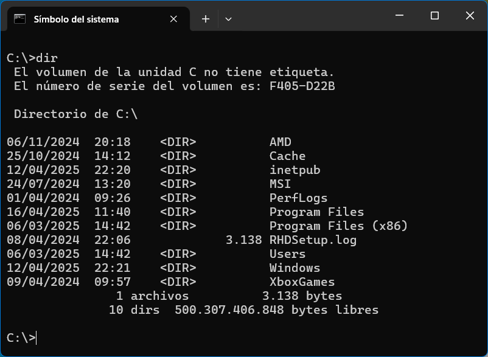
Tip
Puedes ver las carpetas ocultas en el explorador activando la opción "Elementos ocultos" en la pestaña Vista.
En Linux no hay letras de unidad, todo cuelga del directorio raíz /.
Las carpetas más importantes son:
/home → Carpeta personal de cada usuario (/home/alumno)
/etc → Archivos de configuración del sistema (como el “Panel de control” en archivos)
/var → Archivos variables: logs, bases de datos, correos, etc.
/usr → Programas instalados y sus recursos
/bin y /sbin → Comandos y herramientas del sistema
/lib y /lib64 → Librerías necesarias para que funcionen los programas
/opt → Programas externos o de terceros que no vienen con el sistema
/mnt → Punto de montaje temporal para unidades externas
/media → Punto de montaje automático de medios (USB, discos…)
/dev → Representa los dispositivos del sistema (disco, teclado, etc.)
/boot → Contiene todo lo necesario para arrancar el sistema
/run → Información temporal de procesos y servicios activos
/tmp → Archivos temporales. Se vacía automáticamente tras reiniciar.
/cdrom → Punto de montaje reservado para lectores de CD/DVD (en sistemas antiguos)
/lost+found → Carpeta usada por el sistema para recuperar archivos tras errores o apagados forzosos
Note
🤓No necesitas memorizar todas estas carpetas, pero es útil saber para qué sirve cada una si algún día te toca investigar un problema o montar un servidor.
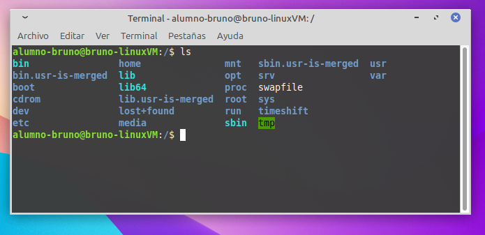
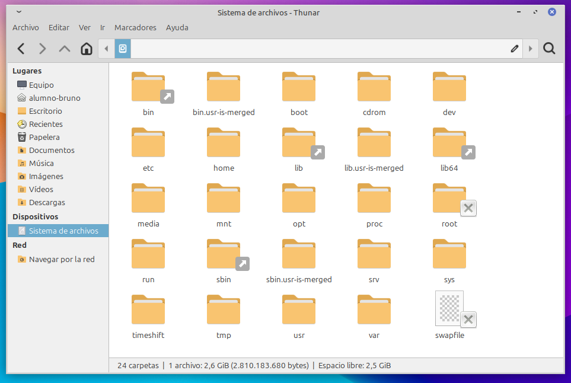
Warning
En Linux puedes moverte por cualquier carpeta desde la terminal, pero muchas están protegidas y requieren permisos de administrador.
| 📂Carpeta | 🪟Windows | 🐧Linux |
|---|---|---|
| Sistema operativo | C:\Windows | / |
| Programas instalados | C:\Program Files / (x86) | /usr, /opt |
| Carpeta de usuario | C:\Users\nombre | /home/nombre |
| Configuración del sistema | Registro / Panel de control | /etc |
| Archivos de configuración de apps | AppData (oculta) | .archivos_ocultos en /home |
| Librerías | Internas a cada programa | /lib, /lib64 |
| Archivos temporales y logs | %TEMP%, C:\Windows\Logs | /var, /tmp |
| Unidades externas | Letras (D:, E:...) | Montadas en /mnt/, /media |
Cuando trabajamos con archivos y carpetas, necesitamos indicar dónde están ubicados. Para eso usamos rutas, que pueden ser absolutas o relativas.
Una buena forma de entenderlo es pensar en cómo das indicaciones a alguien en la vida real:
Si un amigo está contigo en una plaza y te pregunta cómo ir al parque, le dirás algo como:
“Ve recto dos calles y gira a la izquierda”.
Eso es una ruta relativa: depende de dónde estés.
Pero si llamas a un repartidor para que te traiga un paquete, le darás tu dirección completa:
“Calle Mayor, número 18, 4ºB, código postal 46001”.
Eso es una ruta absoluta: funciona desde cualquier punto.
En los sistemas operativos pasa lo mismo. A veces daremos rutas completas (absolutas), y otras veces rutas cortas desde donde ya estamos (relativas). Saber cuándo usar cada una es esencial para no perdernos entre carpetas.
Una ruta absoluta es la dirección completa desde el inicio del sistema.
Siempre empieza por / en Linux, o por la letra de unidad en Windows (C:\).
Ejemplos:
Para hacer referencia al archivo tareas.txt, haremos:
Linux: /home/alumno/Documentos/tareas.txt
Windows: C:\Users\alumno\Documentos\tareas.txt
No importa desde dónde estés, si usas una ruta absoluta, llegarás al mismo sitio.
Warning
¡Ojo con esto! En Windows las rutas usan la barra invertida (\)
mientras que en Linux se usa la barra normal (/).
Si mezclas una con otra, muchos comandos o scripts no funcionarán correctamente.
Una ruta relativa depende de la carpeta en la que estás actualmente.
No empieza por / ni por C:\, sino que va "desde aquí".
Ejemplos:
Supón que estás situado en:
Linux: /home/alumno/
Windows: C:\Users\alumno\
Entonces, para hacer referencia al mismo archivo tareas.txt tendremos que hacer:
Linux: Documentos/tareas.txt
Windows: Documentos\tareas.txt
Son rutas relativas que apuntan a un archivo dentro de la carpeta actual.
Tip
Las rutas relativas son muy útiles para escribir scripts, moverse rápido o trabajar en proyectos donde no sabes en qué carpeta exacta se va a usar.
. → Representa la carpeta actual
.. → Representa la carpeta anterior
Ejemplos:
../Descargas → Subir una carpeta y entrar en Descargas
./script.sh → Ejecutar un archivo que está en la carpeta actual
Important
Entender bien la diferencia entre rutas absolutas y relativas no es solo cosa de terminales: es clave para programar, crear páginas web, o trabajar en red.
Por ejemplo, cuando creas un archivo HTML que carga una imagen, debes usar rutas correctamente o el navegador no encontrará nada.
Además, aunque trabajes en Windows, muchos servidores web (como Apache o Nginx) se ejecutan sobre Linux, donde todo funciona con rutas tipo /var/www/html.
Dominar este concepto te ahorrará errores y te hará avanzar mucho más rápido.
Objetivo: entender cómo funcionan las rutas relativas
1. Abre la terminal en linux y crea esta estructura de carpetas en tu carpeta de usuario:
xxxxxxxxxx21mkdir -p practica/rutas/pruebas2# con el parámetro -p (parents) puedes crear todas las carpetas intermedias si no existenxxxxxxxxxx11cd practica2. Desde dentro de practica, muévete a pruebas con ruta relativa:
xxxxxxxxxx11cd rutas/pruebas3. Ahora vuelve a la carpeta inicial con:
xxxxxxxxxx11cd ../..4. Comprueba la ruta actual con:
xxxxxxxxxx11pwd
Note
Esta práctica puede repetirse también en Windows con los comandos mkdir y cd.
En ambos sistemas se pueden crear archivos de prueba con:
xxxxxxxxxx11echo "Este es un archivo de prueba" > archivo.txt
La terminal de Linux puede parecer intimidante al principio, pero con unos pocos comandos básicos podrás moverte por el sistema, gestionar archivos y hacer tareas cotidianas sin necesidad de interfaz gráfica.
Aquí tienes una lista de comandos esenciales para empezar:
pwd → Muestra la ruta actual (Print Working Directory)
clear → Limpia la pantalla de la terminal
ls → Lista el contenido de una carpeta
cd nombre_carpeta → Cambia a otra carpeta
cd .. → Sube una carpeta
cd → Vuelve a tu carpeta personal (/home/usuario)
man nombre_comando → Muestra ayuda sobre ese comando (man ls)
mkdir nueva_carpeta → Crea una carpeta nueva
mkdir -p ruta1/ruta2 → Crea varias carpetas anidadas de una vez
rm -r nombre_carpeta → Elimina una carpeta y todo su contenido
touch archivo.txt → Crea un archivo vacío
cp archivo1 archivo2 → Copia un archivo
mv archivo carpeta/ → Mueve un archivo o lo renombra
rm archivo.txt → Elimina un archivo
cat archivo.txt → Muestra el contenido de un archivo por pantalla
nano archivo.txt → Abre un editor de texto en la terminal para modificar un archivo
Caution
🫵 El comando rm no pide confirmación por defecto. Úsalo con cuidado.
| Comando | Para qué sirve | Ejemplo de uso |
|---|---|---|
pwd | Mostrar la carpeta actual | pwd |
ls | Ver el contenido de una carpeta | ls -lh |
cd nombre_carpeta | Entrar en una carpeta | cd Descargas |
cd .. | Subir una carpeta | cd .. |
cd | Volver a tu carpeta personal | cd |
clear | Limpiar la pantalla de la terminal | clear |
mkdir nueva_carpeta | Crear una carpeta | mkdir proyectos |
mkdir -p ruta1/ruta2 | Crear estructura de carpetas anidadas | mkdir -p clientes/nuevos |
rm -r nombre_carpeta | Borrar una carpeta y su contenido | rm -r prueba/ |
touch archivo.txt | Crear un archivo vacío | touch notas.txt |
cat archivo.txt | Ver el contenido de un archivo | cat notas.txt |
nano archivo.txt | Editar un archivo en terminal | nano notas.txt |
cp archivo1 archivo2 | Copiar un archivo | cp original.txt copia.txt |
mv archivo carpeta/ | Mover o renombrar un archivo | mv datos.txt backup/ |
rm archivo.txt | Borrar un archivo | rm viejo.txt |
Note
Aunque cd .. se describe como "subir una carpeta", en realidad estás retrocediendo un nivel en la estructura del sistema de archivos.
Puede parecer que bajas porque vas "hacia atrás", pero si lo piensas como un árbol o una escalera de carpetas, realmente estás subiendo al nivel anterior.
Por eso decimos que con .. "subes una carpeta".
lsEl comando ls sirve para listar archivos y carpetas, pero puede mostrar mucha más información si lo combinamos con algunas opciones.
Aquí tienes las más útiles:
ls → Muestra el contenido de una carpeta.
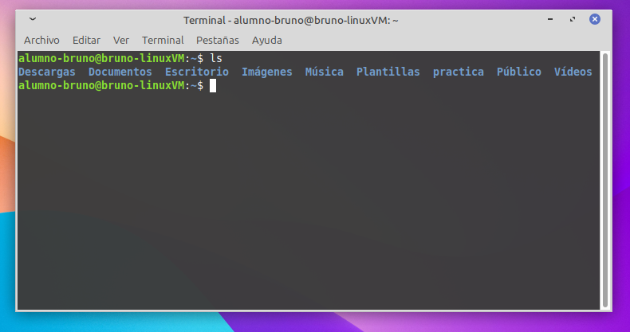
ls -l → Muestra una lista detallada (long), con permisos, propietario, tamaño y fecha.
Muy útil para ver si algo es un archivo, una carpeta, o quién lo ha creado.
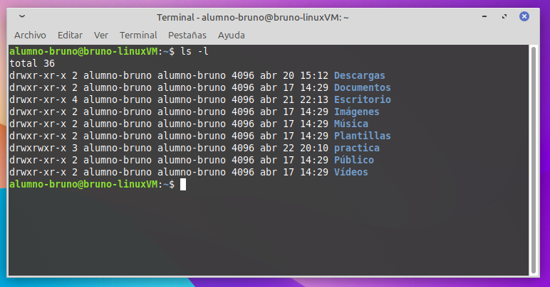
ls -a → Muestra todos los archivos (all) incluyendo los ocultos (los que empiezan por .). Por ejemplo, .bashrc, .config, .gitignore, etc.
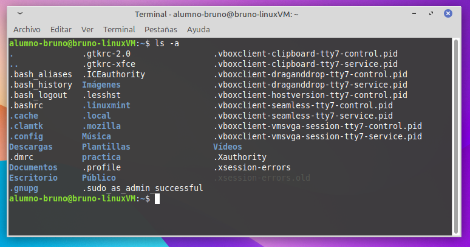
ls -lh → Muestra una lista detallada con tamaños legibles (human readable) (en KB, MB, etc.)
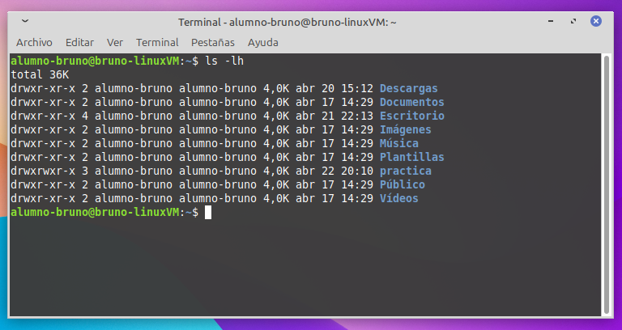
ls -R → Muestra el contenido de todas las subcarpetas (recursivo).
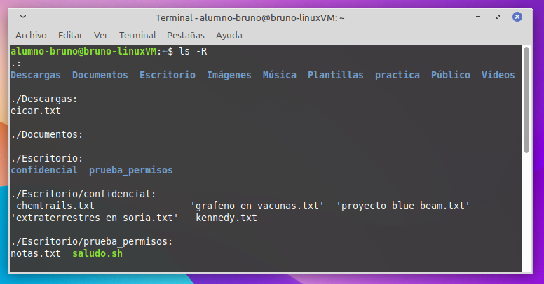
ls -d */ → Solo muestra carpetas, no archivos. Muy útil para tener una vista más limpia.
Tip
Puedes combinar varias opciones en un solo comando.
Por ejemplo: ls -alh para ver una lista completa, detallada y con tamaños legibles.
📊 ¿Cuántas opciones tiene realmente ls?
En un sistema Linux típico (como Ubuntu o Linux Mint), si ejecutas man ls, verás que ls puede aceptar más de 50 opciones distintas.
Algunas versiones (como la de GNU coreutils) permiten combinar múltiples opciones cortas y largas (como -l, -a, --color=auto, --sort=time, etc.).
La lista completa del man incluye más de 300 líneas de ayuda solo para ls.
Tip
La mayoría de usuarios solo usan 3 o 4 combinaciones toda su vida.
Con saber ls, ls -l, ls -a y ls -lh, ya puedes trabajar como un profesional en la mayoría de tareas diarias.
Los comodines son símbolos especiales que se usan para hacer coincidir varios archivos o carpetas a la vez sin tener que escribir sus nombres completos o sus extensiones de archivo.
Se usan mucho con comandos como ls, cp, rm, mv, dir, etc.
🟡Comodines más comunes
* → Sustituye cualquier cosa (cualquier cantidad de caracteres)
? → Sustituye un solo carácter
🟡Ejemplos
ls *.txt → Muestra todos los archivos con extensión .txt
ls carta* → Muestra archivos que empiezan por carta
ls archivo?.txt → Muestra archivo1.txt, archivo2.txt, pero no archivo10.txt
rm *.bak → Borra todos los archivos con extensión .bak
cp *.jpg copia/ → Copia todas las imágenes .jpg a la carpeta copia
Note
En Windows, estos comodines también funcionan en comandos como dir, copy, del, etc.
Por ejemplo: dir *.docx o del imagen?.jpg
Windows también tiene una línea de comandos, y aunque no es tan habitual usarla para todo como en Linux, sí tiene una serie de comandos básicos muy útiles.
Puedes usar estos comandos tanto en cmd como en PowerShell.
cd → Cambia de carpeta
cd .. → Sube una carpeta
dir → Lista el contenido de una carpeta
cls → Limpia la pantalla
mkdir nombre → Crea una carpeta
rmdir nombre → Elimina una carpeta vacía
rmdir /s nombre → Elimina una carpeta con todo su contenido
echo texto > archivo.txt → Crea un archivo con contenido
copy archivo1 archivo2 → Copia un archivo
move archivo carpeta\ → Mueve o renombra un archivo
del archivo.txt → Elimina un archivo
| Comando | Para qué sirve | Ejemplo de uso |
|---|---|---|
cd | Cambiar de carpeta | cd Documentos |
cd .. | Subir una carpeta | cd .. |
dir | Ver el contenido de una carpeta | dir |
cls | Limpiar la pantalla | cls |
mkdir nombre | Crear una nueva carpeta | mkdir pruebas |
rmdir nombre | Eliminar una carpeta vacía | rmdir antigua |
rmdir /s nombre | Eliminar carpeta con todo su contenido | rmdir /s carpeta1 |
echo texto > archivo.txt | Crear un archivo con contenido | echo hola > saludo.txt |
copy archivo1 archivo2 | Copiar un archivo | copy datos.txt copia.txt |
move archivo carpeta\ | Mover o renombrar un archivo | move informe.txt backup\ |
del archivo.txt | Eliminar un archivo | del notas.txt |
Aunque Windows y Linux tienen estructuras y comandos diferentes, hay una serie de conceptos comunes que conviene tener muy claros para no confundirse cuando saltamos de un sistema a otro.
Note
En las últimas versiones, Windows ha incorporado muchas ideas del mundo Linux:
El terminal moderno (Windows Terminal) permite pestañas, temas y múltiples shells (cmd, PowerShell, Git Bash, WSL...)
Incluso comandos como ls o pwd funcionan directamente en PowerShell gracias a alias predefinidos.
Esto facilita mucho la transición y el aprendizaje entre sistemas.
Ambos sistemas trabajan con archivos y carpetas (o directorios), organizados jerárquicamente.
Un archivo puede contener texto, imágenes, configuraciones, programas...
Una carpeta puede contener otros archivos o carpetas (subdirectorios).
Tanto en Windows como en Linux usamos comandos como cd, .., o el tabulador Tab para movernos entre carpetas.
Las rutas pueden ser absolutas o relativas, como ya vimos en el punto 5.
| Acción | 🐧Linux | 🪟Windows |
|---|---|---|
| Ver archivos | ls | dir |
| Entrar en una carpeta | cd nombre | cd nombre |
| Subir una carpeta | cd .. | cd .. |
| Borrar archivo | rm archivo.txt | del archivo.txt |
| Crear carpeta | mkdir nueva | mkdir nueva |
| Ver ubicación actual | pwd | cd |
| Borrar carpeta (y contenido) | rm -r carpeta | rmdir /s carpeta |
Tip
Si aprendes bien los conceptos de Linux, adaptarte a la terminal de Windows será mucho más fácil… y viceversa.
Los escritorios virtuales te permiten tener varios “espacios de trabajo” separados en el mismo sistema.
Son muy útiles cuando quieres organizarte mejor o separar tareas: por ejemplo, tener la terminal en un escritorio, el navegador en otro, y los apuntes en un tercero.
Tip
Aunque no los uses siempre, los escritorios virtuales pueden ayudarte mucho cuando trabajas con muchas ventanas abiertas a la vez.
Son una herramienta muy útil para mantener el entorno limpio y concentrarte mejor.
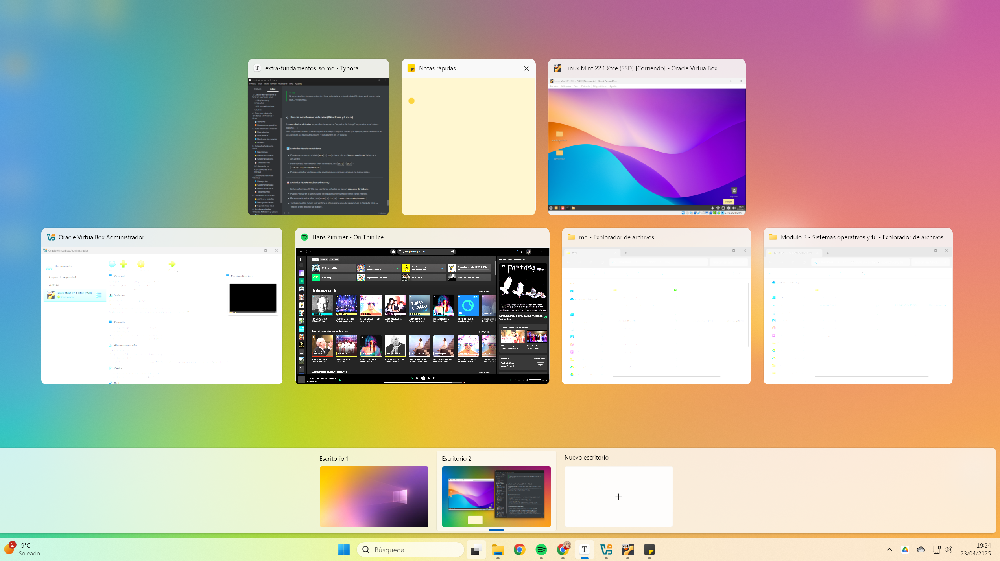
Puedes acceder con el atajo Win + Tab y hacer clic en "Nuevo escritorio" (abajo en el centro).
Para cambiar rápidamente entre escritorios, usa Ctrl + Win + Flecha izquierda/derecha
Puedes arrastrar ventanas entre escritorios o cerrarlos cuando ya no los necesites.
En Linux Mint con XFCE, los escritorios virtuales se llaman áreas de trabajo.
Puedes verlos en el conmutador de espacios (normalmente en el panel inferior).
Para moverte entre ellos, usa Ctrl + Alt + Flecha izquierda/derecha
También puedes mover una ventana a otro espacio con clic derecho en la barra de título → "Mover a otra área de trabajo".
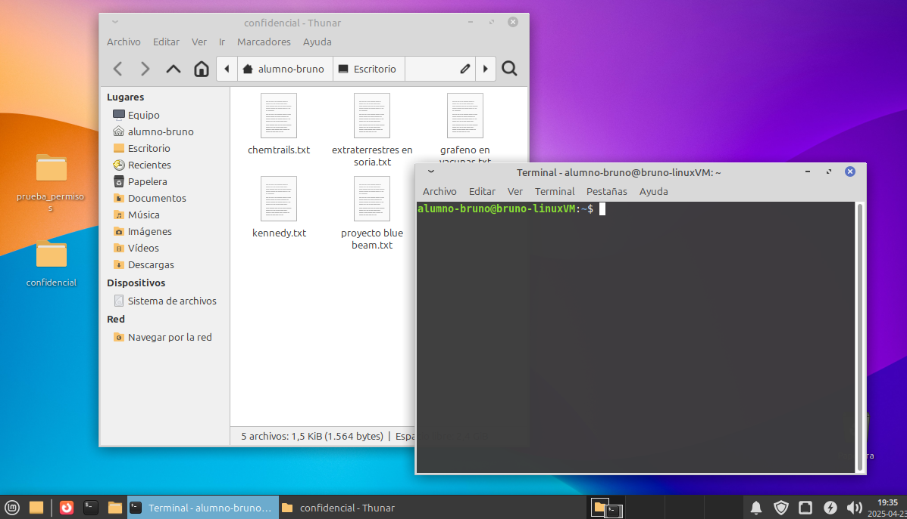
Warning
Si no ves los espacios de trabajo en Linux Mint XFCE, es posible que no estén activados por defecto.
Para solucionarlo:
Haz clic derecho sobre el panel y selecciona Panel > Añadir nuevos elementos...
Busca el elemento "Selector de áreas de trabajo" y añádelo.
Ve al menú de Configuración > Áreas de trabajo y asegúrate de tener al menos 2 configurados.
¡Y listo! Ya puedes cambiar de espacio y mover ventanas entre ellos.
Objetivo: usar todos los comandos aprendidos en Linux en una práctica realista.
Important
Debes realizar las tareas usando únicamente la terminal de Linux. No puedes usar la interfaz gráfica.
📝 Tareas
Crea una carpeta llamada practica-final dentro de la carpeta Escritorio tu carpeta personal.
Ve comprobando con el comando ls que todo va bien.
Dentro de ella, crea una subcarpeta llamada documentos.
Crea un archivo llamado resumen.txt dentro de documentos.
Escribe dentro del archivo la frase: Práctica final completada.
Copia el archivo a la carpeta practica-final, fuera de documentos.
Renombra la copia que está en practica-final a completado.txt.
Elimina la carpeta documentos con su contenido.
Muestra por pantalla el contenido del archivo completado.txt.
Tip
Si al final todo está bien hecho, deberías tener un único archivo llamado completado.txt dentro de practica-final, con el mensaje correcto dentro.
No importa si las tareas se hacen en un único comando o en varios. Lo importante es el resultado final.
xxxxxxxxxx91cd ~2cd Escritorio3mkdir -p practica-final/documentos4touch practica-final/documentos/resumen.txt5echo "Práctica final completada." > practica-final/documentos/resumen.txt6cp practica-final/documentos/resumen.txt practica-final/7mv practica-final/resumen.txt practica-final/completado.txt8rm -r practica-final/documentos9cat practica-final/completado.txt